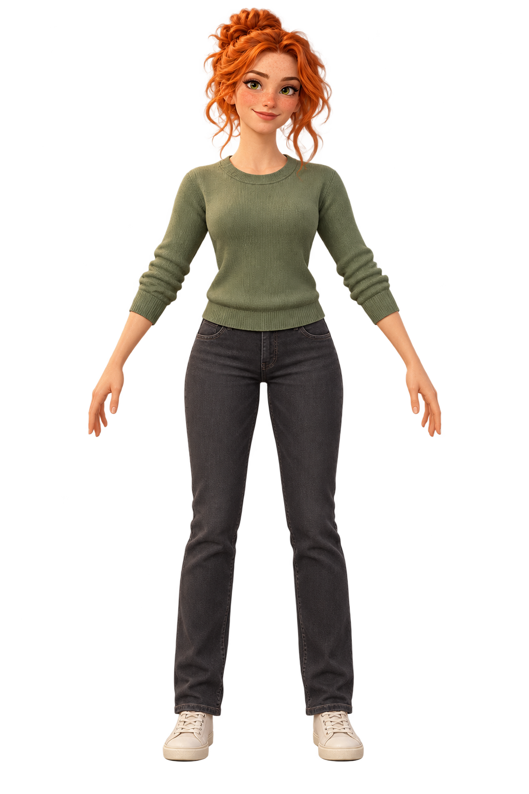

ПЕРСОНАЖИ КОМАНДЫ
МираДизайнер
Первый образ из портрета.
Референс рядом с настоящей 3D-моделью.

02 Объём
3D-прототипЗагружаем Миру…
Потяни, чтобы повернуть · колесо или щипок — приблизить
ПЕРСОНАЖИ КОМАНДЫ
Первый образ из портрета.
Референс рядом с настоящей 3D-моделью.

Загружаем Миру…
Потяни, чтобы повернуть · колесо или щипок — приблизить